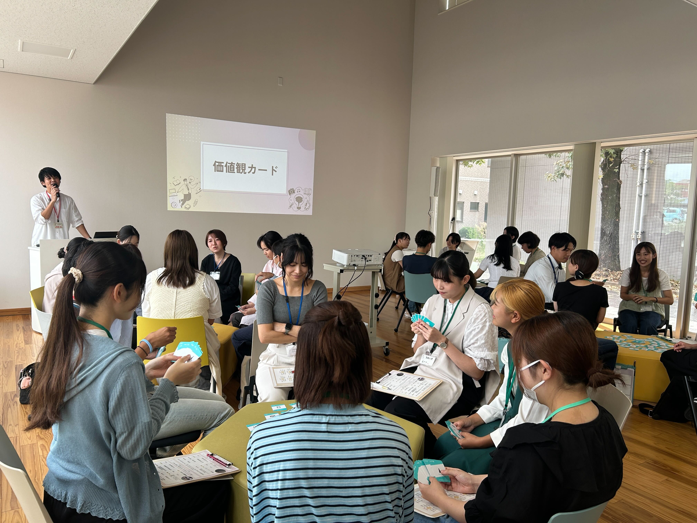
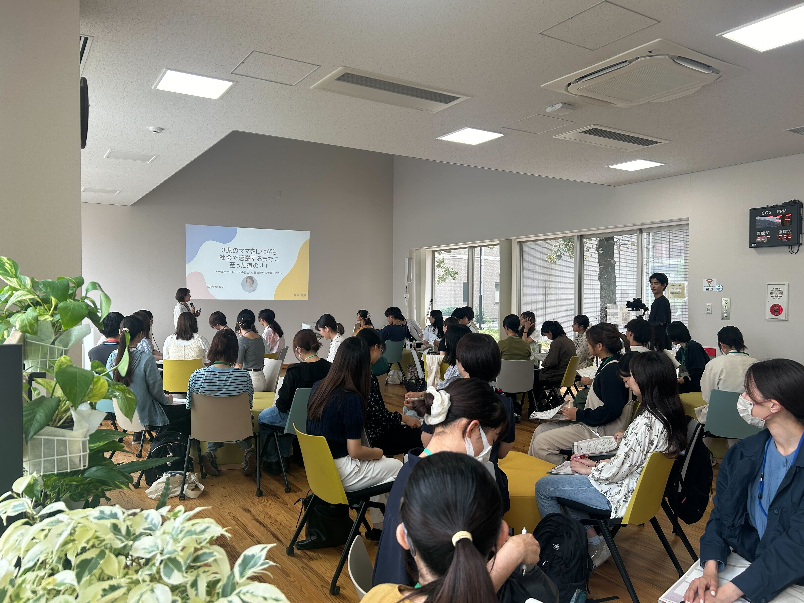
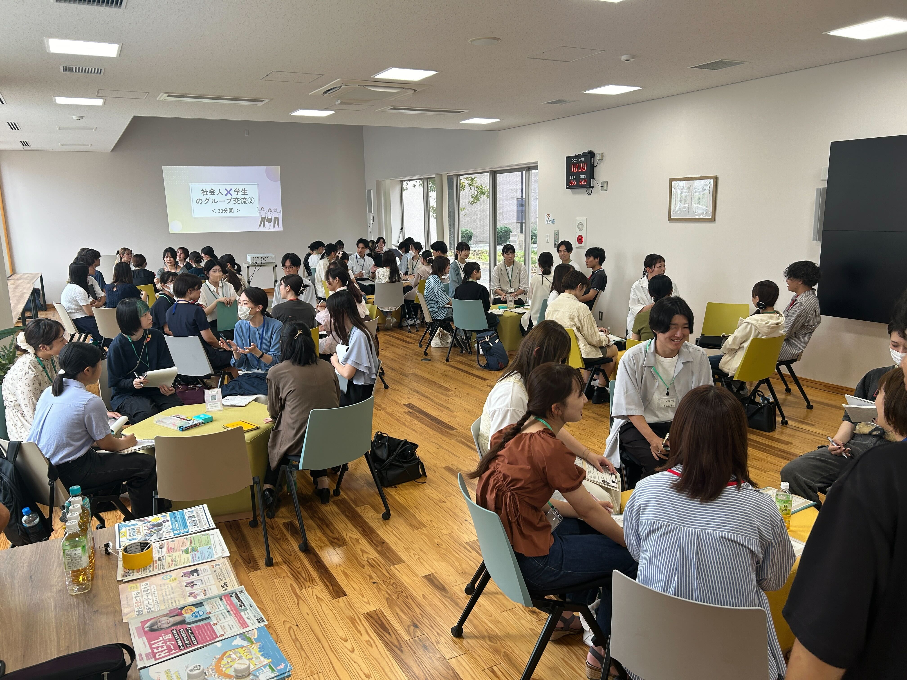
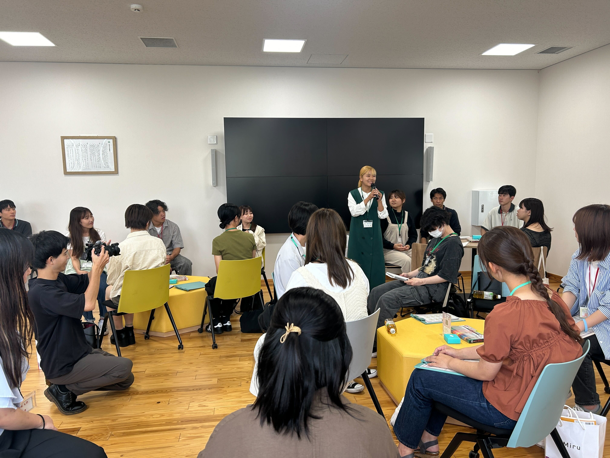

2024年9月28日(土)に開催された「就職のREALで利ある2024～＃発見！ときめく私の未来～」に、約60名の学生が参加し、愛媛で活躍する社会人であるゲストスピーカーの方々と交流を行いました。
「就職のREALで利ある」とは
「就職のREALで利ある」は、就職に関するリアルな悩みを、愛媛で活躍する社会人との交流を通じて解決することを目的としたイベントです。社会人のリアルな声を直接聞くことで、学生にとって実際に役立つ“利”を得られる場となっています。
また、このイベントを通じて、仕事や人生（キャリア）を考えるうえで、愛媛県内での可能性にも目を向けてもらうことを目指しています。県内で活躍する社会人の経験談や価値観に触れることで、地元でのキャリア形成のイメージが広がり、愛媛でいきいきと自分らしく働く若者を増やしていくことが大きなゴールです。
本イベントは、参加者同士の交流を深めるため、価値観カードを使った恋愛観についてのグループディスカッションからスタートしました。和やかな雰囲気の中、お互いの考えを共有し、リラックスした空気が生まれました。 その後、鈴木理絵さんによるセミナーが行われ、「3児のママをしながら社会で活躍するまでに至った道のり」をテーマに、ご自身の経験やキャリア形成についてお話しいただきました。リアルなエピソードを交えた講演は、参加者にとって大変刺激的なものとなりました。 続いての交流会では、社会人の方々とグループごとにざっくばらんに話し合う機会が設けられ、学生たちは熱心に耳を傾けながら、将来について真剣に考える姿が見られました。貴重な学びの場となり、参加者同士の新たなつながりが生まれるイベントとなりました。
◇参加学生からの感想◇
・個人的に目指している未来とは全く異なる話が聞けたので、視野が広がった。
・周りの学生の質問からも沢山の学びがあり、刺激を貰った。
・今までしたいと思うことがぼんやりしていたが、はっきり決まった時間になった。
◇運営学生からの感想◇
本イベントでは、普段の学生生活で関わることのない社会人の方々と学生が、互いに率直な想いを伝え合い、交流を深める貴重な機会になりました。運営兼、一人の学生として交流会に参加しましたが、合同企業説明会では分からない社員さんの人柄に触れることができる場であり、終始リラックスした雰囲気の中で、フランクな会話が生まれていたのが印象的でした。
運営としても、双方にとって価値ある時間を提供できたことを嬉しく感じています。今後も学生と社会人が気軽に交流し、新たな気づきを得られるような場を作っていきたいと思います。
 
 